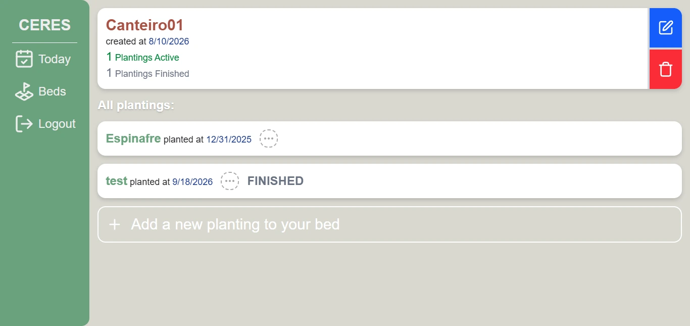
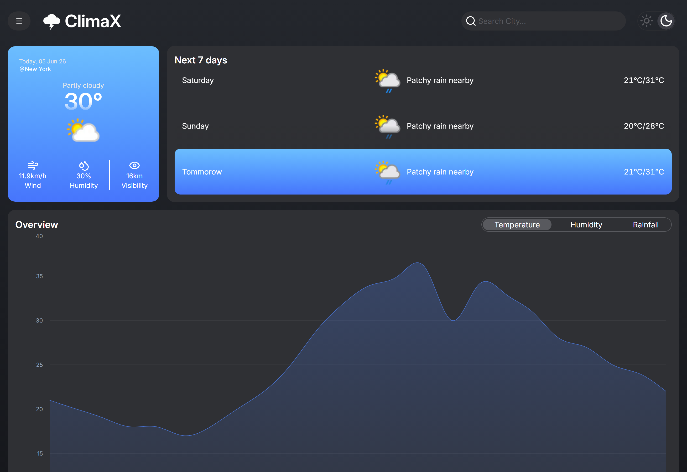
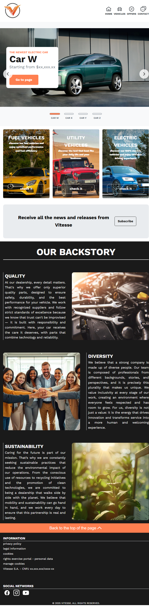

Desenvolvedor Fullstack especializado na construção de interfaces modernas, responsivas e bem estruturadas. Além do foco no client-side, também construo APIs robustas e realizo integrações de ponta a ponta utilizando Node.js, Express, Prisma e PostgreSQL.

Gerenciador de Horta · Fullstack
Aplicação fullstack que responde, todo dia, o que a horta precisa: a tela “Hoje” calcula rega, adubo e colheita pendentes a partir do último registro real, sem depender de cronograma fixo. Autenticação JWT com refresh token rotativo em cookie httpOnly, posse de dados verificada em cadeia (incluindo relações indiretas), histórico com scroll infinito via Intersection Observer e testes unitários e de integração contra banco isolado.
API em plano gratuito: o primeiro acesso pode levar cerca de 1 minuto

Dashboard de Previsão do Tempo · Frontend
Dashboard de previsão do tempo desenvolvido para fornecer informações climáticas de forma rápida e intuitiva. Implementa consumo de APIs, gerenciamento eficiente de estado assíncrono e visualização de dados através de gráficos interativos, com suíte de testes unitários cobrindo hooks, contexts e componentes.

Site de Concessionária · Frontend
Site multi-páginas (home, listagem, detalhe, ofertas, mapa, contato) para uma concessionária fictícia. HTML semântico, CSS metodologia BEM, layout mobile-first com Flexbox e Grid, e JavaScript puro para interações de DOM. Design inspirado em marcas automotivas reais como a Renault — alto contraste, espaço negativo e hierarquia visual.
Busco oportunidades para contribuir com equipes de desenvolvimento, aprender com profissionais experientes e evoluir construindo produtos reais.